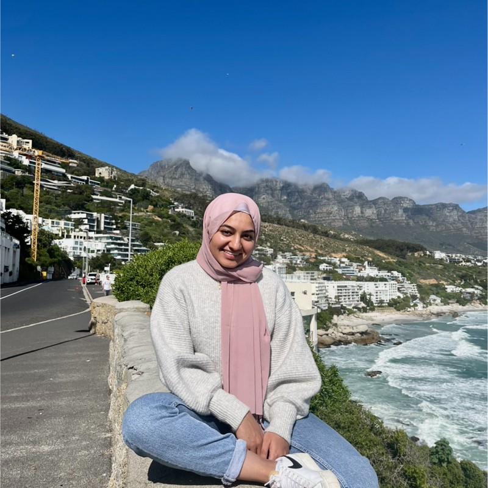
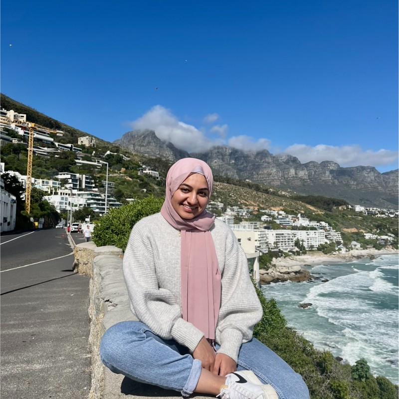

Our Team Members
I am a web developer with over 5 years of experience. I specializes in frontend development and has a knack for creating user-friendly designs. My passions include problem-solving, learning new technologies, and playing video games in my spare time.

I am a bright front-end developer with a solid knowledge of backend technologies. I take pride in creating user-friendly interfaces and seamless user experiences, and I believe that the key to a successful project is in the details. Aside from coding, I have an adventurous spirit that loves challenges. I believe this spirit helps me in my coding career as it pushes me to go beyond my comfort zone, explore new technologies, and constantly update my knowledge base. I also love biscuits! From classic shortbread to inventive, gourmet flavours, I'm always ready to try out new varieties. I find the process of baking, especially the precision and creativity involved, quite similar to coding. Both require an accurate recipe (or algorithm) and the freedom to tweak and make it your own. When I'm not immersing myself in code or enjoying biscuits, you'll probably find me on roller skates. I find roller skating to be a perfect blend of fitness, precision, and fun. It allows me to switch off from the digital world, soak up the surroundings, and maintain my physical fitness - all while doing something I truly enjoy.
My name is Gustavo, and I am a Brazilian full-stack developer with a passion for design and psychology. My expertise lies in working with JavaScript/TypeScript and Python to create innovative and user-centric solutions. I believe that understanding the human mind and behavior is essential to craft intuitive and engaging user experiences. With a diverse skill set that encompasses both development and design, I thrive in bringing creativity and functionality together to build exceptional digital products.
 =======

>>>>>>> Stashed changes
=======

>>>>>>> Stashed changes
My name is Sania, and I am an innovative front-end developer with a deep interest in AI and machine learning. My skills include working with React, Vue and Angular to build highly interactive and dynamic user interfaces. I believe that the key to a successful application is a seamless and intuitive user experience, and I strive to bring this to all my projects. My interest in machine learning enables me to think from a data-driven perspective and to incorporate AI elements into my designs, creating truly modern and future-ready digital solutions.

I'm Elif, a dedicated back-end developer with a passion for cloud technologies and cyber security. With extensive experience in Node.js, Django, and Ruby on Rails, I specialize in building robust and secure back-end infrastructures. I understand that a strong back-end is just as important as an impressive front-end for creating performant applications. Beyond my technical skills, I bring a strong problem-solving mindset and a constant drive to stay updated with the latest technologies. My passion for cyber security reinforces my commitment to creating applications that are not only functional, but also secure and reliable.